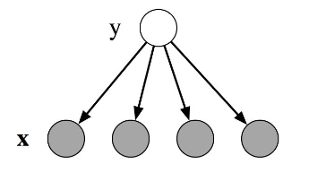

- Naive Bayes Model
- Hidden Markov Model
- More detail about HMM
- NB -> HMM
Naive Bayes Review
Model (x - feature vector, y - one label)
$$p(y,x)=p(y)\prod_{k=1}^{K} p(x_k|y)$$
- Training: estimate probabilities by likelihood maximization
- Inference: $y*=argmax[p(x,y)]$

如果是在一系列观测序列 $x=(x_{1}, \dots, x_{n})$ 的基础上来预测一个类别序列 $y=(y_{1}, \dots, y_{n})$, 我们可以建立一个简单的序列模型：把单一的NB模型乘起来
$p(\vec{y} \mid \vec{x}) = \prod_{i=1}^{n} p(y_{i}) \cdot p(x_{i} \mid y_{i})$
- 序列中的每一个位置只有一个Feature, 条件依赖于类别 $y_i$
- 并不能捕获观测变量 $x_i$ 之间的交织关系
Hidden Markov Model Review
Model:
$$p(y,x)=\prod_{t=1}^{T} p(y_t|y_{t-1})p(x_t|y_t)$$
-
Training: Baum-Welch algorithm.
- E-step: Forward-Backward (expectation over hidden variables)
- M-stem: Likelihood maximization (update parameters)
- Inference: Viterbi algorithm
More detail about HMM
HMM Frameword definition
- states (e.g., labels): $T=t_1, t_2, ...,t_N$
- observations (e.g., words) : $W=w_1, w_2, ..., w_N$
- two special states: $t_{start}$ and $t_{end}$ which are not associated with the observation.
Probabilities relating states and observations
- Initial probability: an initial probability distribution over states
- Final probability: a final probability distribution over states
- Transition probability: a matrix A with the probabilities from going from one state to another
- Emission probability: a matrix B with the probabilities of an observation being generated from a state
First-order Hidden Markov Model assumptions
- Markov Assumption: the probability of a particular state is dependent only on the previous state. Formally: $P(t_i|t_1,...,t_{i-1})=P(t_i|t_{i-1})$
- Output Independence: the probability of an output observation $w_i$ depends only on the state that produced the observation $t_i$ and not on any other states or any other observations. Formally: $$P(w_{i} \mid t_{1} \ldots q_{i}, \ldots, q_{T} ,o_{1}, \ldots,o_{i}, \ldots,o_{T} ) = P(o_{i} \mid q_{i})$$

3 major problems of HMM
- 给定一个模型，如何计算某个特定的输出序列的概率: Forward-Backward算法
- 给定一个模型和某个特定的输出序列，如何找到最可能产生这个输出的状态序列: Viterbi算法
- 给定足够量的观测数据，如何估计隐含马尔可夫模型的参数：鲍姆-韦尔奇算法
Disvantages of HMM
- HMM is only dependent on every state and its corresponding observed object
- The sequence labeling, in addition to having a relationship with individual words, also relates to such aspects as the observed sequence length, word context and others
- The target function and the predicted target function do not match:
HMM acquires the joint distribution $P(Y, X)$ of the state and the observed sequence, while in the estimation issue, we need a conditional probability $P(Y|X)$.
*Viterbi算法*
动态规划算法
最可能的在位置 $i$ ,以状态 $t$ 结束：$$\delta_{i}(t) = \underset{t_{0},\ldots,t_{i-1},t}{\max} \ \ P(t_{0},\ldots,t_{i-1},t,w_{1},\ldots,w_{i-1})$$
通过马尔可夫假设，
$$\delta_{i}(t) = \underset{t_{i-1}}{\max} \ \ P(t \mid t_{i-1}) \cdot P(w_{i-1} \mid t_{i-1}) \cdot \delta_{i}(t_{i-1})$$
最可能的前一个状态：$$\Psi_{i}(t) = \underset{t_{i-1}}{\arg\max} \ \ P(t \mid t_{i-1}) \cdot P(w_{i-1} \mid t_{i-1}) \cdot \delta_{i}(t_{i-1})$$
An unfilled trellis representation of an HMM
- Viterbi sequence: ABB
- $P(ABB,xyy) = 0.00185522$
Word Emission and State Transitions probabilities matrices
*Forward Algorithm*
模型 $\lambda=(A,B,\pi)$
*Backward Algorithm*
模型 $\lambda=(A,B,\pi)$
HMM中单个状态
给定模型 $\lambda$ 和观测序列 $O$ ,在时刻 $t$ 处于状态 $q_i$ 的概率记为:
$\gamma_t(i) = P(i_t = q_i | O,\lambda) = \frac{P(i_t = q_i ,O|\lambda)}{P(O|\lambda)}$
$P(i_t = q_i ,O|\lambda) = \alpha_t(i)\beta_t(i)$
$\gamma_t(i) = \frac{ \alpha_t(i)\beta_t(i)}{\sum\limits_{j=1}^N \alpha_t(j)\beta_t(j)}$
HMM中多个个状态
给定模型 $\lambda$ 和观测序列 $O$,在时刻 $t$ 处于状态 $q_i$，且时刻 $t+1$ 处于状态 $q_j$ 的概率记为:
$$\xi_t(i,j) = P(i_t = q_i, i_{t+1}=q_j | O,\lambda) = \frac{ P(i_t = q_i, i_{t+1}=q_j , O|\lambda)}{P(O|\lambda)}$$
而 $P(i_t = q_i, i_{t+1}=q_j , O|\lambda) = \alpha_t(i)a_{ij}b_j(o_{t+1})\beta_{t+1}(j)$
得到 $\xi_t(i,j) = \frac{\alpha_t(i)a_{ij}b_j(o_{t+1})\beta_{t+1}(j)}{\sum\limits_{r=1}^N\sum\limits_{s=1}^N\alpha_t(r)a_{rs}b_s(o_{t+1})\beta_{t+1}(s)}$